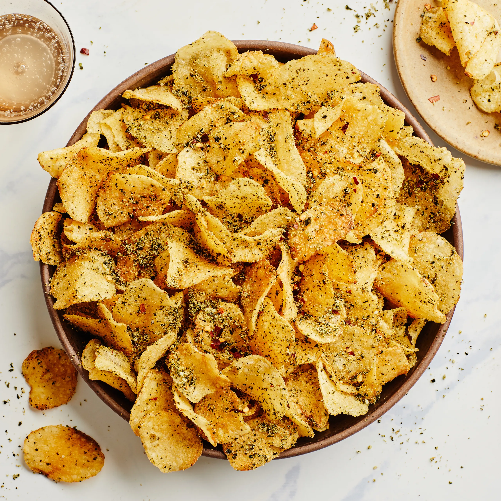

Potato Chips
Home

A healthy alternative to regular store-bought potato chips!
Ingredients
- Russet potatoes
- olive oil
- Salt
- Sesame seeds
Instructions
- Preheat 2 baking sheets in a 425 degrees F oven.
- Toss thinly sliced russet potatoes with olive oil and salt.
- Spread on the hot baking sheets, sprinkle with sesame seeds and bake 10 minutes.